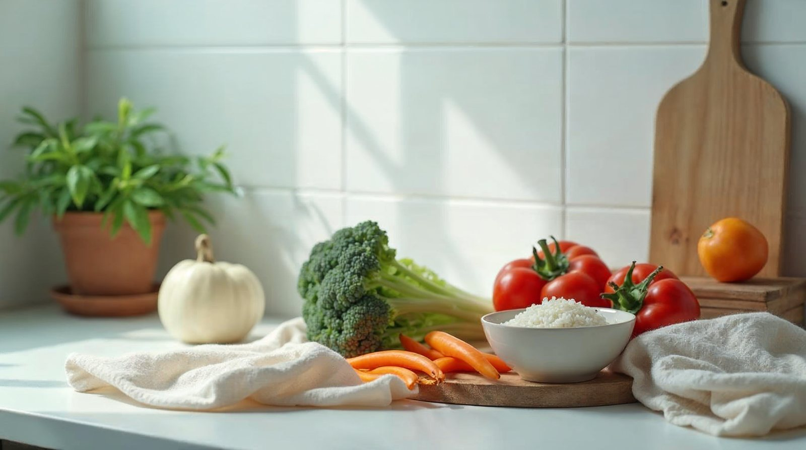
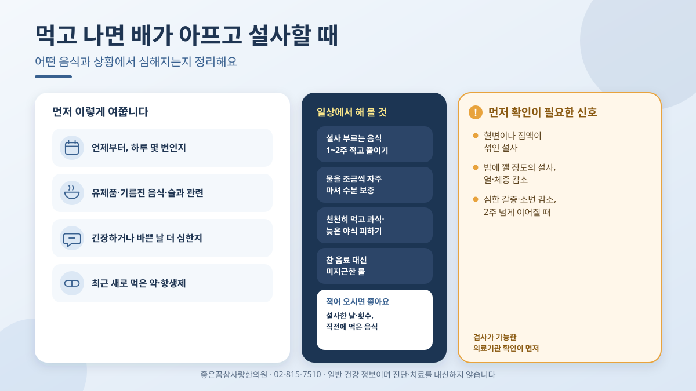

이종호 한의사 감수좋은꿈참사랑한의원 대표원장 (한의사 면허번호 19769)발행 2026-11-26 · 수정 2026-11-26
이 글의 차례
점심을 먹고 사무실로 돌아오는 길, 숟가락을 내려놓은 지 얼마 되지 않았는데 아랫배가 꾸르륵거립니다. 엘리베이터를 기다리며 화장실이 몇 층에 있는지부터 떠올리게 되지요. 밥만 먹으면 화장실이 급해지는 식후 설사는 찬 음식, 먹는 속도, 그날의 긴장, 지난밤 잠이 겹쳐 생기는 경우가 많습니다.
그래서 저는 무엇을 드셨는지만큼 언제, 어떻게, 어떤 상태에서 드셨는지를 여쭙고 모든 분께 맥을 짚습니다. 다만 피가 섞인 변이나 검은 변, 열과 심한 복통, 자다가 깨서 보는 설사가 있다면 한의원보다 내과 진료가 먼저입니다.
진료실에서 이런 말씀을 자주 듣습니다. 약속 장소는 화장실이 가까운 곳으로 고르고, 회식 자리에서는 일부러 젓가락을 일찍 내려놓는다고요. 배가 아픈 것도 힘들지만, 언제 신호가 올지 몰라 마음을 졸이는 하루가 더 지친다는 분이 많습니다.
그 불편을 '원래 장이 약해서'라는 말로 덮어 두지 않으셨으면 합니다. 어떤 날 심하고 어떤 날 괜찮은지 차근차근 짚어 보면, 줄여 볼 수 있는 부분이 보이는 경우가 적지 않습니다.
왜 밥만 먹으면 화장실이 급해질까요
음식이 위에 들어오면 장도 따라 움직이기 시작합니다. 아침을 먹고 나면 화장실에 가고 싶어지는 것도 그래서입니다. 이 움직임 자체는 자연스러운 몸의 반응인데, 장이 예민해진 상태에서는 그 신호가 너무 크고 급하게 옵니다.
혹시 같은 메뉴인데 어떤 날은 괜찮고 어떤 날은 탈이 나지 않으셨나요? 무엇이 장을 예민하게 만드는지는 사람마다 다릅니다. 제가 진료실에서 자주 짚는 갈래는 찬 음식과 배의 온기, 먹는 속도와 양, 긴장, 잠입니다. 한 가지만 있는 분보다 두세 가지가 겹친 분이 더 많습니다.
찬 음식과 배의 온기
찬 음식을 먹거나 배가 차가워지면 설사를 하는 분이 있습니다. 아이스커피, 냉면, 찬 맥주를 드신 날이나 에어컨 바람 아래 오래 앉아 있던 날 더 심하다고 하시지요. 겨울에 차가운 바닥에 오래 앉아 있다가 배탈이 났다는 분도 계십니다.
한의학에서는 소화를 비위(脾胃)의 기능으로 설명하며, 몸의 온기와 마음의 긴장이 소화에 함께 영향을 준다고 봅니다. 손발과 아랫배가 늘 찬 분이 찬 음식에 더 예민한 경우가 많아, 설사 이야기를 들을 때 추위를 얼마나 타시는지도 같이 여쭙습니다.
찬 음료를 마신 뒤의 복통이 주된 불편이라면 찬 음식이나 찬 음료를 먹으면 배가 아플 때는 어떻게 하나요?도 함께 읽어 보세요.
먹는 속도와 양
십 분 만에 비우는 점심, 하루치를 몰아 먹는 늦은 저녁처럼 위가 한꺼번에 크게 늘어나면 장에 가는 신호도 커집니다. 기름진 음식, 매운 음식, 술이 겹치는 날은 더하지요. 같은 메뉴라도 천천히 드신 날은 덜하다는 분이 적지 않습니다.
커피, 그리고 무설탕 껌이나 사탕에 든 감미료처럼 장을 재촉하는 것도 있습니다. 하루에 몇 잔, 몇 개쯤 드시는지 함께 세어 보면 생각보다 많았다는 분이 계십니다.
회식이 몰리는 연말에는 이 갈래가 특히 두드러집니다. 술과 기름진 안주, 늦은 귀가와 짧은 잠이 한꺼번에 겹치기 때문입니다. 회식 뒤 며칠씩 속이 불편하다면 연말 회식을 하고 나면 며칠씩 속이 불편한 이유는 무엇인가요?도 참고가 됩니다.
긴장할 때 배가 먼저 반응한다면
발표가 있는 날 아침, 시험 보러 가는 길, 중요한 면접 전에 배가 먼저 아프다는 분이 많습니다. 긴장하면 위와 장의 움직임이 평소와 달라질 수 있습니다. 긴장이 오래 이어지는 시기에는 설사와 변비가 번갈아 오기도 합니다.
이런 분들께 가장 답답한 점은 긴장되는 날을 피할 수 없다는 것입니다. 일정은 바꿀 수 없으니 그 전날의 잠과 그날 아침의 식사를 먼저 손봅니다. 시험 기간마다 배가 아픈 학생이라면 시험기간만 되면 속이 더부룩하고 배가 자주 아픈 대학생은 어떻게 살피나요?도 함께 보세요.
잠이 흔들린 다음 날
잠을 설친 다음 날 배가 더 예민하다고 말씀하시는 분이 있습니다. 소화와 잠, 기분은 서로 이어져 있어서 한쪽이 흔들리면 다른 쪽도 따라 흔들리는 경우가 많습니다. 늦은 야식은 소화가 덜 된 채 눕게 해 잠을 얕게 만들고, 다음 날 아침 배를 또 예민하게 합니다.
그래서 저는 설사 이야기를 들으면서도 몇 시에 주무시고 몇 번 깨셨는지를 꼭 여쭙니다. 설사 때문에 왔는데 잠은 왜 묻나 싶으실 수 있지만, 실마리가 거기서 나오는 경우가 꽤 있습니다.
검사로 먼저 확인할 원인
장염을 앓고 난 뒤 한동안 변이 무른 분, 항생제처럼 새로 드신 약 뒤에 설사가 생긴 분도 있습니다. 우유를 마시면 바로 탈이 나는 분은 유당에 예민한 경우일 수 있습니다. 감염이나 염증성 장질환, 갑상선 기능 변화처럼 검사로 확인해야 하는 원인도 있습니다.
이런 원인은 맥이나 혀로 대신 알아낼 수 없습니다. 그래서 경고 신호가 있거나 설사가 몇 주째 이어지면 내과나 소화기 진료로 원인을 먼저 확인하시도록 안내합니다. 40대 이후에 처음 생긴 설사가 이어진다면 내시경 등 검사를 먼저 받아 보시길 권합니다.
예를 들면 이런 경우입니다
예를 들어 발표가 있는 날마다 빈속에 커피를 마시고 출근하자마자 화장실을 찾는 경우라면, 전날 잠든 시각과 아침 식사 여부, 커피 시각을 나란히 적어 봅니다. 빈속 커피를 따뜻한 물과 가벼운 아침으로 바꾼 날과 비교해 보시라고 권합니다.
예를 들어 점심마다 냉면이나 찬 음료를 곁들이고 오후 내내 아랫배가 묵직한 경우라면, 찬 음식을 먹은 날과 아닌 날의 변 모양을 비교해 봅니다. 자리에 에어컨이나 찬 바람이 직접 닿는지, 손발과 아랫배가 찬 편인지도 함께 여쭙습니다.
예를 들어 회식이 몰린 주마다 묽은 변이 며칠씩 이어지는 경우라면, 술과 기름진 안주, 늦은 귀가와 짧은 잠이 겹친 날을 표시해 봅니다. 다음 회식 전에 첫 접시는 따뜻한 국물로 시작하고 마시는 속도를 미리 정해 두는 것도 방법입니다.
스스로 점검해 보세요
- 식사 뒤 30분 안에 화장실을 찾는 날이 일주일에 사흘 이상이다
- 찬 음료나 찬 음식을 먹은 날 더 급하다
- 발표나 시험처럼 긴장되는 일정이 있는 날 배가 먼저 아프다
- 잠을 설친 다음 날 배가 더 예민하다
- 급하게 먹거나 한꺼번에 많이 먹은 날 더 심하다
- 설사와 변비가 번갈아 나타난다
- 외출 전에 화장실 위치부터 확인하게 된다
세 가지 넘게 해당한다면 어느 갈래부터 손볼지 함께 정해 보면 좋겠습니다. 표시한 목록을 진료 때 그대로 보여 주셔도 됩니다. 밤에 자다 깨서 보는 설사나 피가 섞인 변이 있다면 이 목록보다 검사가 먼저입니다.
먼저 이렇게 여쭙니다
- 설사가 언제부터, 하루 몇 번 있었나요? 식사 뒤 몇 분쯤 지나 신호가 오나요?
- 변은 물처럼 묽은가요, 풀어지는 정도인가요? 점액이나 피가 섞이지는 않나요?
- 찬 음식, 기름진 음식, 우유, 술, 커피 가운데 유독 걸리는 것이 있나요?
- 긴장되는 날이나 잠을 설친 다음 날 더 심한가요?
- 손발이나 아랫배가 찬 편인가요?
- 최근 장염을 앓았거나 새로 드신 약이 있나요? 체중은 그대로인가요?
설사인지 무른 변인지 처음부터 딱 잘라 말씀하기 어려우실 수 있습니다. 괜찮습니다. 흔히 묽은 변을 하루 세 번 이상 보면 설사라고 부르는데, 모양이 반쯤 풀어지는지 물처럼 쏟아지는지만 알려 주셔도 대부분 가늠이 됩니다.

일상에서 먼저 해 볼 수 있는 것
- 찬 음료는 미지근한 물이나 따뜻한 차로 바꾸고, 식사는 따뜻한 국물 한 숟가락으로 시작하기
- 한 끼를 15~20분 이상, 한 입에 여러 번 씹으며 천천히 먹기
- 과식과 늦은 야식을 줄이고 저녁은 잠들기 3시간 전쯤 가볍게 마치기
- 아랫배와 허리를 덮는 옷을 입고, 찬 바닥이나 찬 바람 아래 오래 앉지 않기
- 의심 가는 음식은 한 번에 하나씩 줄여 보며 1~2주 기록하기
- 설사한 날은 물을 조금씩 자주 마시고, 죽처럼 부드러운 음식을 조금씩 먹기
한꺼번에 다 바꾸려 하지 않으셔도 됩니다. 좋다는 음식을 이것저것 챙기기보다 불편을 키우는 습관 하나를 줄이는 쪽이 오래 이어 가기 쉽습니다. 변화는 짧은 기록으로 확인해 보세요.
설사가 겁나서 끼니를 굶는 분도 있습니다. 오래 굶으면 기운이 떨어지고 탈수가 올 수 있으며, 다음 끼니를 몰아 먹게 되어 배가 더 놀랄 수 있습니다. 양을 줄이더라도 끼니 시간은 지켜 주세요.
지사제는 급할 때 잠깐 도움이 될 수 있지만, 원인을 가린 채 지나가게 할 수도 있습니다. 지사제를 찾는 날이 잦아졌다면 그만큼 원인을 살펴볼 때가 되었다는 신호로 받아들여 주세요.
하루 이틀 묽은 변은 물을 챙기며 지켜보셔도 됩니다. 식후 설사가 2주 넘게 이어지거나 점점 잦아진다면 상담과 함께 필요한 검사를 받아 보시길 권합니다.
한의원에서 함께 살필 수 있는 경우
- 검사에서 큰 이상이 없다고 들었지만 식후 설사가 몇 주째 반복되는 경우
- 긴장하는 날마다 배가 먼저 아프고 화장실이 급해지는 경우
- 찬 음식에 유난히 예민하고 손발과 아랫배가 늘 찬 경우
- 설사가 이어진 뒤 기운이 떨어지고 잠까지 얕아진 경우
좋은꿈참사랑한의원에 처음 오시면 설사가 시작된 무렵과 횟수, 변의 모양부터 듣습니다. 피가 섞인 변, 검은 변, 열, 밤 설사, 체중 감소 같은 신호가 없는지 먼저 확인하고, 받으신 검사 결과와 드시는 약도 이때 함께 봅니다.
그다음 양손을 올려 봐 달라고 말씀드리고 맥을 짚습니다. 처음 오신 분이든 다시 오신 분이든 저는 모든 분의 맥을 짚습니다. 점심을 드시고 바로 오셨다면 잠시 숨을 고르신 뒤에 짚는데, 식사 직후나 걸어오신 직후에는 맥이 달라지기 때문입니다.
맥을 짚으며 잠과 식사, 손발의 온기를 여쭙고, 필요하다고 판단될 때 혀와 배를 살핍니다. 배에서는 단단하게 뭉친 곳이나 누르면 불편한 곳이 있는지, 손에 닿는 배가 찬지 따뜻한지를 봅니다. 복진은 진단을 대신하는 검사가 아니라 다른 이야기와 맞춰 보는 단서입니다.
이렇게 모은 이야기를 놓고 침이나 한약 상담 가운데 맞는 방향과, 이번 주에 바꿔 볼 식사 습관 한두 가지를 함께 정합니다. 여러 불편이 겹친 분께는 식사 리듬부터 정리해 보자고 말씀드리는 경우가 많습니다. 검사가 더 필요해 보이면 내과나 소화기 진료를 먼저 안내합니다.
다시 오시면 맥을 다시 짚고, 지난번 이후 설사한 날과 그 전날의 생활부터 이어서 여쭙습니다. 해 보니 어땠는지, 무엇이 지키기 어려웠는지까지 들어야 다음 계획을 무리 없이 세울 수 있습니다.
퇴근 뒤에 들르시는 분이 많아 평일은 저녁 8시까지, 토·일·공휴일은 오후 3시까지 진료합니다. 원장별 진료 일정은 방문 전 전화(02-815-7510)로 확인해 주세요.
이렇게 기록해 오시면 상담이 쉬워집니다
거창한 일기는 필요 없습니다. 끼니마다 먹은 시각과 메뉴를 적고, 찬 것·기름진 것·술·커피에는 동그라미를 쳐 주세요. 그 옆에 화장실에 간 시각과 변의 모양을 한 줄로 붙이면 됩니다.
예를 들면 이런 식입니다. '12시 10분 냉면과 아이스커피, 12시 40분 묽은 변 1회, 오후 발표, 어젯밤 5시간 잠.' 이렇게 1~2주만 모아도 어떤 조합에서 탈이 나는지 생각보다 또렷하게 보입니다.
열이 났던 날, 피가 비쳤던 날, 체중이 달라진 날은 따로 표시해 주세요. 드시는 약과 영양제, 받으신 대장내시경이나 혈액 검사 결과지도 챙겨 오시면 상담이 한결 구체적이 됩니다.
이런 증상은 먼저 확인이 필요합니다
- 피가 섞인 변이나 짜장처럼 검은 변을 보는 경우
- 열이 나면서 배가 심하게 아픈 경우
이런 신호가 있으면 한의원보다 가까운 병원이나 응급실을 먼저 찾으세요.
화장실 위치부터 찾는 하루는 생각보다 사람을 지치게 합니다. 한 번에 다 바꾸려 하기보다 찬 음료 하나, 식사 속도 하나부터 같이 바꿔 보면 좋겠습니다. 다음에 오시면 지난 일주일 가운데 배가 가장 편했던 날과 그 전날 무엇을 하셨는지부터 여쭙겠습니다.

여쭙는 것
- 설사가 언제부터, 하루 몇 번 있었나요? 식사 뒤 몇 분쯤 지나 신호가 오나요?
- 변은 물처럼 묽은가요, 풀어지는 정도인가요? 점액이나 피가 섞이지는 않나요?
- 찬 음식, 기름진 음식, 우유, 술, 커피 가운데 유독 걸리는 것이 있나요?
생활에서 해 볼 것
- 찬 음료는 미지근한 물이나 따뜻한 차로 바꾸고, 식사는 따뜻한 국물 한 숟가락으로…
- 한 끼를 15~20분 이상, 한 입에 여러 번 씹으며 천천히 먹기
- 과식과 늦은 야식을 줄이고 저녁은 잠들기 3시간 전쯤 가볍게 마치기
한의원에서 함께 살필 것
- 검사에서 큰 이상이 없다고 들었지만 식후 설사가 몇 주째 반복되는 경우
- 긴장하는 날마다 배가 먼저 아프고 화장실이 급해지는 경우
- 찬 음식에 유난히 예민하고 손발과 아랫배가 늘 찬 경우
먼저 확인이 필요한 신호
- 피가 섞인 변이나 짜장처럼 검은 변을 보는 경우
- 열이 나면서 배가 심하게 아픈 경우
한눈에 보는 표
| 구분 | 핵심 |
|---|---|
| 여쭙는 것 | 설사가 언제부터, 하루 몇 번 있었나요? 식사 뒤 몇 분쯤 지나 신호가 오나요? 변은 물처럼 묽은가요, 풀어지는 정도인가요? 점액이나 피가 섞이지는 않나요? |
| 생활에서 해 볼 것 | 찬 음료는 미지근한 물이나 따뜻한 차로 바꾸고, 식사는 따뜻한 국물 한 숟가락으로 시작하기 한 끼를 15~20분 이상, 한 입에 여러 번 씹으며 천천히 먹기 |
| 한의원에서 함께 살필 것 | 검사에서 큰 이상이 없다고 들었지만 식후 설사가 몇 주째 반복되는 경우 긴장하는 날마다 배가 먼저 아프고 화장실이 급해지는 경우 |
| 먼저 확인이 필요한 신호 | 피가 섞인 변이나 짜장처럼 검은 변을 보는 경우 열이 나면서 배가 심하게 아픈 경우 |
자주 묻는 질문
스트레스 때문에 생기는 설사도 한의원에서 상담하나요?
네. 긴장과 소화는 함께 움직이는 경우가 많아, 설사의 모양과 함께 일정과 잠, 하루 리듬을 여쭙고 진맥으로 몸 상태를 살핍니다.
검사에서 이상이 없다는데 식후 설사가 계속돼요.
큰 이상이 없다는 뜻이라 다행이지만, 불편이 이어진다면 먹는 속도와 찬 음식, 긴장과 잠의 리듬을 함께 살펴볼 수 있습니다. 받으신 검사 결과지를 가져와 주세요.
지사제를 먹어도 되나요?
열이 나거나 피가 섞인 설사는 원인을 먼저 확인해야 해서 지사제로 덮어 두지 않습니다. 지사제나 처방받은 약을 어떻게 쓸지는 의사·약사와 상의해 주세요.
우유만 마시면 설사를 하는데 끊어야 하나요?
맞지 않는 분은 양을 줄이거나 발효 유제품으로 바꿔 보며 기록해 봅니다. 영양이 걱정되면 상담 때 함께 정리합니다.
좋은꿈참사랑한의원은 재진 때 지난번 이야기부터 이어서 여쭙니다. 진료시간과 예약은 오시는 길에서 확인하세요.
어디서 상담받을 수 있나요?
좋은꿈참사랑한의원은 서울 동작구 만양로2길 2 신성빌딩 3층·5층(서울 동작구 상도동, 7호선 상도역 3번 출구 근처)에 있습니다. 한의사 3명(이종호 대표원장, 조영기 수석진료원장, 정원영 진료원장)이 진료합니다. 진료시간은 평일 09:30~20:00(점심 13:00~14:00), 토·일·공휴일 09:30~15:00이며, 방문 전 전화로 확인을 권합니다. 예약은 네이버 예약, 카카오톡 상담, 전화 02-815-7510로 받습니다.
이 글은 일반적인 건강 정보이며 개인의 진단이나 치료를 대신하지 않습니다. 증상이 있거나 복용 중인 약이 있다면 진료를 통해 확인하세요. 치료 효과는 개인마다 다를 수 있습니다.
작성 기준: 일반적으로 알려져 있는 건강 정보를 참고해 정리했습니다(대표원장 감수). 증상 기록은 1~2주 동안 하루 1회, 비슷한 시간에 적어 오시면 지난 상태와 비교하기 쉽습니다.